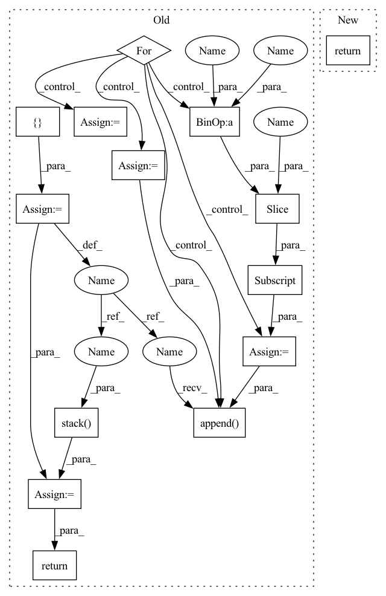

Pattern ID :22799

Before Change
lengths_list: List[int] = self.lengths().tolist()
N = max(lengths_list) if desired_length is None else desired_length
offset = 0
values = []
for length in lengths_list:
value = self.values()[offset : offset + length]
if length <= N:
padding_tensor = torch.full(
[N - length], padding_value, device=self.values().device
)
value = (
torch.cat((padding_tensor, value), 0)
if pad_from_beginning
else torch.cat((value, padding_tensor), 0)
)
else:
value = value[-N:] if chop_from_beginning else value[:N]
values.append(value)
offset += length
final_tensor = torch.stack(values)
return final_tensor
def lengths(self) -> torch.Tensor:
_lengths = _maybe_compute_lengths(self._lengths, self._offsets)
After Change
lengths_list: List[int] = self.lengths().tolist()
N = max(lengths_list) if desired_length is None else desired_length
return torch.ops.fbgemm.jagged_to_padded_dense(
self.values(), [self.offsets()], [N], padding_value
)
In pattern: SUPERPATTERN
Frequency: 3
Non-data size: 14
Instances
Fragment ID: 72406384
Project Name: facebookresearch/torchrec
Commit Name: 52ddfd407a0e505682a053007893b3c24a158afa
Time: 2022-06-15
Author: joshuadeng@fb.com
File Name: torchrec/sparse/jagged_tensor.py
M Class Name: JaggedTensor
N Class Name: JaggedTensor
M Method Name: to_padded_dense(3)
N Method Name: to_padded_dense(5)
M Parent Class: Pipelineable
N Parent Class: Pipelineable
M File Name: torchrec/sparse/jagged_tensor.py
N File Name: torchrec/sparse/jagged_tensor.py
M Start Line: 321
M End Line: 378
N Start Line: 360
N End Line: 363
'>
Before Change
nums_nodes, id = graph.batch_num_nodes(), 0
items_embedding = self.item_embedding(torch.tensor([i for i in range(self.items_total)]).to(nodes.device))
batch_embedding = []
for num_nodes in nums_nodes:
output_node_features = nodes_output[id:id + num_nodes, :]
output_nodes = nodes[id: id + num_nodes]
beta = torch.zeros(self.items_total, 1).to(nodes.device)
beta[output_nodes] = 1
embed = (1 - beta * self.alpha) * items_embedding.clone()
embed[output_nodes, :] = embed[output_nodes, :] + self.alpha[output_nodes] * output_node_features
batch_embedding.append(embed)
id += num_nodes
batch_embedding = torch.stack(batch_embedding)
return batch_embedding
class AggregateTemporalNodeFeatures(nn.Module):
After Change
items_embedding = self.item_embedding(torch.tensor([i for i in range(self.items_total)]).to(nodes.device))
alpha = torch.sigmoid(self.alpha)
embed = (1 - alpha) * items_embedding.clone() + alpha * nodes_output
return embed
class AggregateTemporalNodeFeatures(nn.Module):
'>
Fragment ID: 72406385
Project Name: benedekrozemberczki/pytorch_geometric_temporal
Commit Name: c402d2a14167bceaa3c8d3845879f8056e8aead7
Time: 2021-07-18
Author: benedek.rozemberczki@gmail.com
File Name: torch_geometric_temporal/nn/attention/dnntsp.py
M Class Name: GlobalGatedUpdater
N Class Name: GlobalGatedUpdater
M Method Name: forward(3)
N Method Name: forward(4)
M Parent Class: nn.Module
N Parent Class: nn.Module
M File Name: torch_geometric_temporal/nn/attention/dnntsp.py
N File Name: torch_geometric_temporal/nn/attention/dnntsp.py
M Start Line: 78
M End Line: 98
N Start Line: 85
N End Line: 87
'>
Before Change
lengths_list: List[int] = self.lengths().tolist()
N = max(lengths_list) if desired_length is None else desired_length
offset = 0
values = []
for length in lengths_list:
value = self.values()[offset : offset + length]
if length <= N:
padding_tensor = torch.full(
[N - length], padding_value, device=self.values().device
)
value = (
torch.cat((padding_tensor, value), 0)
if pad_from_beginning
else torch.cat((value, padding_tensor), 0)
)
else:
value = value[-N:] if chop_from_beginning else value[:N]
values.append(value)
offset += length
final_tensor = torch.stack(values)
return final_tensor
def lengths(self) -> torch.Tensor:
_lengths = _maybe_compute_lengths(self._lengths, self._offsets)
After Change
lengths_list: List[int] = self.lengths().tolist()
N = max(lengths_list) if desired_length is None else desired_length
return torch.ops.fbgemm.jagged_to_padded_dense(
self.values(), [self.offsets()], [N], padding_value
)
'>
Fragment ID: 72406376
Project Name: pytorch/torchrec
Commit Name: 52ddfd407a0e505682a053007893b3c24a158afa
Time: 2022-06-15
Author: joshuadeng@fb.com
File Name: torchrec/sparse/jagged_tensor.py
M Class Name: JaggedTensor
N Class Name: JaggedTensor
M Method Name: to_padded_dense(3)
N Method Name: to_padded_dense(5)
M Parent Class: Pipelineable
N Parent Class: Pipelineable
M File Name: torchrec/sparse/jagged_tensor.py
N File Name: torchrec/sparse/jagged_tensor.py
M Start Line: 321
M End Line: 378
N Start Line: 360
N End Line: 363